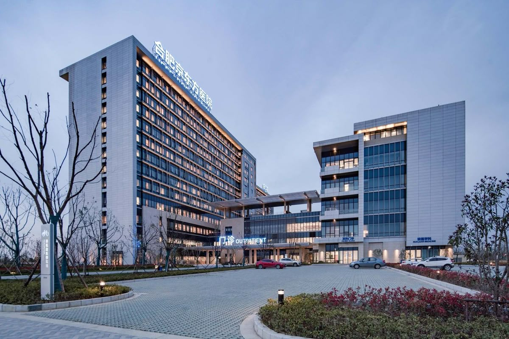

Providing World-Class Healthcare With a Personal Touch
For over two decades, Medicus has been at the forefront of medical excellence, providing compassionate, patient-centered care to our community.
Equipped with state-of-the-art technology and led by top-tier medical specialists, we offer comprehensive healthcare services ranging from routine check-ups to complex surgical procedures. Your health, comfort, and well-being are at the heart of everything we do.

20+
Years of Experience
50+
Specialized Doctors
100k+
Satisfied Patients
24/7
Emergency Services
Our Mission
To improve the health and well-being of the communities we serve by delivering exceptional, accessible, and compassionate healthcare with utmost integrity and medical excellence.
- Providing patient-first clinical treatments tailored to individual diagnostic paths.
- Maintaining rigorous hospital hygiene, safety, and continuous staff development protocols.
- Bridging advanced medical research directly into everyday patient bedside care.
Our Vision
To be the most trusted healthcare provider in the region, recognized for pioneering medical innovation, patient satisfaction, and clinical outcomes.
- Expanding regional diagnostic centers to ensure remote area healthcare access.
- Adopting next-generation artificial intelligence for early disease detection models.
- Establishing global medical partnerships for specialized fellowship programs.
Our Core Values
The foundational principles that dictate every interaction, diagnosis, and surgical operation.
Compassion & Empathy
We treat every patient not just as a case file, but as a valued human being. Our nursing and medical teams prioritize emotional support alongside advanced clinical therapy to reduce anxiety throughout the healing process.
Clinical Excellence
We hold ourselves to uncompromising international medical standards. Through continuous peer reviews, rigorous staff training, and modern technology integration, we ensure optimal health recovery metrics.
Uncompromising Integrity
Transparency is central to our operational ethic. We provide clear treatment pricing models, honest diagnostic evaluations, and strict ethical adherence in all confidential health documentation procedures.
How We Started & Grew
A legacy of dedication, care, and continuous medical innovation.
Founded in 2004 with a Single Vision
Medicus was established over two decades ago as a small community clinic with a clear objective: to provide accessible, high-quality healthcare built on compassion and medical expertise.
What began with just three specialized doctors and two consultation rooms quickly expanded into a premier multi-specialty healthcare institution. Driven by patient trust and technological advancement, we expanded our facilities, introduced modern diagnostic labs, and brought together leading specialists from various medical fields.
Today, Medicus stands as a state-of-the-art medical center, serving thousands of families each year while remaining true to our founding principle: putting patient care above all else.
Clinic Foundation
Opened as a local primary care clinic with 3 doctors and basic outpatient consultation units.
Facility Expansion
Added surgical units, 24/7 emergency care, and modern imaging labs including MRI and CT scan systems.
International Accreditation
Recognized globally for excellence in clinical safety, infection control, and exceptional patient satisfaction rates.
Leading Healthcare Center
A full-service regional hospital with over 50 specialists, advanced ICUs, and telemedicine capabilities.